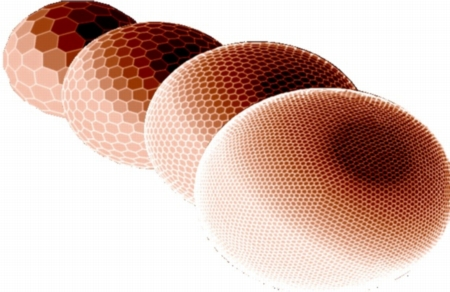
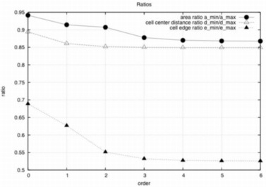
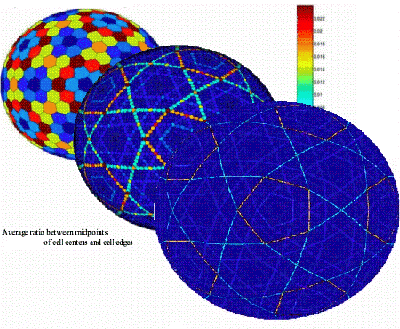
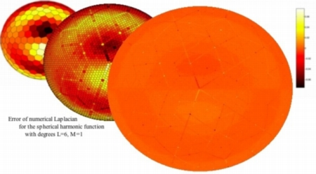

discretization

Geodesic grids are an interesting subject of its own. How do you discretize the sphere
in a uniform way? For membrane waves, this is an investigation worth spending some
time on.
Where to start? First of all,
ask Carl Tape.
He wrote such a nice master thesis about ray theory and how to investigate it on a spherical membrane,
that I worked the next years on figuring out how he did all this.
He used a grid which is based upon the two platonic solids, a
dodecahedron and icosahedron;
a setup for which John Woodhouse
has the construction map and provided it for this study.
Now we build our basic set of vertices which is then refined by subfolding spherical triangles between them
(and the triangle corners build the centers of the pentagons and hexagons we need for the calculations).
This subfolding can be done as many times as you like to.
(I'm not yet sure if it makes sense to do it more than six times. It depends upon the waves or more probably
upon their wavelengths and how many points per wavelength to put into).
uniformity

Very important is how uniformly distributed your vertices are.
To have a measure for this, we take a look at ratios between the smallest and biggest:
for cell areas, for cell edges, for the distance from one cell center to its neighbors.
The closer this ratio is to one, the better. As you can see, we are close but not there.
refinement
That's the main problem in all these grid constructions, you just can't discretize the sphere in a uniform way while you only subdivide triangles. Take a look at the following picture and you can see that all these nice lines on the sphere.
 Well, they appear when you distort pentagons and hexagons. And they don't disappear after refinement of the grid. Basically this is told us when we take a look at this distance between midpoints of cell centers and corresponding cell edges. Heikes and Randall showed us already in 1995 that this distance is then leading to errors in our calculation of the Laplacian. But step by step.spherical Laplacian
You can calculate the Laplacian
in this discretized way for the sphere. It just depends on cell areas,
the length of cell edges and the distance between the cell centers.
And that's the problem. Can you see these little tiny light and dark spots on the biggest sphere?

These spots are cells on which our Laplacian is really bad.
Now the one million Swiss franc question:
Is there a relation between them and the nice lines from above?
Sorry, that's Heikes and Randall which already found the answer.
And yes, they stick together.
references:
Peter, D., C. Tape, L. Boschi and J. H. Woodhouse, 2007.
Surface wave tomography: global membrane waves and adjoint methods
, Geophys. J. Int.,
171, 1098 - 1117.
Tape, C., 2003. Waves on a Spherical Membrane, M.Sc. thesis, University of Oxford, U.K.
Heikes, R. and D. A. Randall, 1995. Numerical integration of the shallow-water equations on a twisted
icosahedral grid.1. Basic design and results of tests, Mon. Weather Rev., 123, 1862-1880.
Heikes, R. and D. A. Randall, 1995. Numerical integration of the shallow-water equations on a twisted
icosahedral grid.2. A detailed description of the grid and an analysis of numerical accuracy, Mon.
Weather Rev., 123, 1881-1887.